<!doctype html>
<html lang="en">

  <head>
    <meta charset="utf-8">

    <title>Hackathon Arduino IoT 2015 - Politecnico Open unix Labs</title>

    <meta name="description" content="Hackathon Arduino 2015">
    <meta name="author" content="Nicola Corna">
    <meta name="author" content="Edoardo Negri">

    <meta name="apple-mobile-web-app-capable" content="yes" />
    <meta name="apple-mobile-web-app-status-bar-style" content="black-translucent" />

    <meta name="viewport" content="width=device-width, initial-scale=1.0, maximum-scale=1.0, user-scalable=no, minimal-ui">

    <link rel="stylesheet" href="reveal.js/css/reveal.css">
    <link rel="stylesheet" href="reveal.js/css/theme/night.css" id="theme">
    <link href='https://fonts.googleapis.com/css?family=Montserrat' rel='stylesheet' type='text/css'>

    <!-- Printing and PDF exports -->
    <script>
      var link = document.createElement( 'link' );
      link.rel = 'stylesheet';
      link.type = 'text/css';
      link.href = window.location.search.match( /print-pdf/gi ) ? 'reveal.js/css/print/pdf.css' : 'reveal.js/css/print/paper.css';
      document.getElementsByTagName( 'head' )[0].appendChild( link );
    </script>

    <!--[if lt IE 9]>
    <script src="reveal.js/lib/js/html5shiv.js"></script>
    <![endif]-->

    <!-- For syntax highlighting -->
	<link rel="stylesheet" href="reveal.js/highlight.js/src/styles/solarized-light.css" id="highlight-theme">
  </head>

  <style type="text/css">
  .reveal pre code {
    color: #3f3f3f;
    background: #eee none repeat scroll 0% 0%;
    font-size: 0.75em;
    line-height: 1.4em;
    border-radius: .2em;
  }
  </style>

  <body>
    <div class="reveal">
      <!-- Any section element inside of this container is displayed as a slide -->
      <div class="slides">
        <!-- Slides are separated by newline + three dashes + newline, vertical slides identical but two dashes -->
			<section data-markdown data-separator="^\n---\n$"
			         data-separator-vertical="^\n--\n$">
				<script type="text/template">


<!-- .slide: data-background="#fdfddf" -->

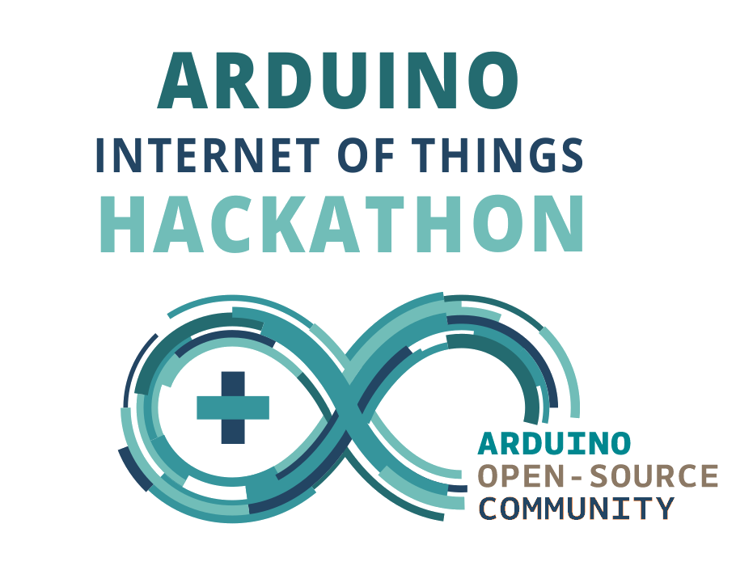

---

<!-- .slide: data-background="#333333" -->

<div style="float:left; width:50%">


<h3><b> Nicola Corna</b></h3>
<h4> [nicola@corna.info](mailto:nicola@corna.info) </h4>
<h4> [github.com/corna](https://github.com/corna)</h4>
</div>

<div style="float:left; width:50%">


<h3><b> Edoardo Negri</b></h3>
<h4> [edne@gmx.com](mailto:edne@gmx.com) </h4>
<h4> [github.com/edne](https://github.com/edne)</h4>
<h4> [edne.net](http://edne.net) </h4>
</div>

---

# [poul.org](https://poul.org)
<iframe src="https://poul.org" frameborder="0" width="100%" height="500px"></iframe>

---

### Hint:

### per muovervi tra le slide non usate le frecce direzionali, usate **Spazio** o **PagGiù** per andare avanti, **PagSu** per tornare indietro.

---

## Trovate queste slide all'indirizzo

### [slides.poul.org/2015/hackathon-iot](http://slides.poul.org/2015/hackathon-iot/#/)

---

## Calendario
 - Venerdí 11 dicembre, 16.15-18.00, aula S.1.7 – Preparazione <!-- .element: class="fragment" -->
 - Sabato 12 dicembre, 9.00-18.00, aula S.1.7 – Hacking Time! <!-- .element: class="fragment" -->

---

# Indice

 - <a href="#/7">Presentazione</a>
 - <a href="#/9">Materiale a vostra disposizione</a>
 - <a href="#/10">Descrizione dei componenti</a>
 - <a href="#/19">Wi-Fi</a>
 - <a href="#/25">Json</a>
 - <a href="#/26">API</a>
 - <a href="#/27">Invio e ricezione dati</a>
 - <a href="#/30">Visualizzazione</a>

---

# Internet of Things

L'Internet of Things (IoT) è una rete di dispositivi connessi a Internet (spesso _embedded_ e connessi a sensori) che elaborano e scambiano dati.

--

### In questo hackathon vi verranno forniti dispositivi Arduino con connettività wireless e alcuni sensori, e avrete l'occasione di creare il vostro dispositivo IoT!

--

### Cos'è questo hackathon?
 Un'occasione per...
 - entrare nel mondo dell'IoT <!-- .element: class="fragment" -->
 - affinare la propria conoscenza di Arduino <!-- .element: class="fragment" -->
 - rinfrescare le proprie nozioni di elettronica <!-- .element: class="fragment" -->
 - divertirsi! <!-- .element: class="fragment" -->

--

### Cosa *non* è questo hackathon?
 - un corso <!-- .element: class="fragment" -->

--

## Prerequisiti
 - Fondamenti di programmazione in C/C++ (circa metà corso di Fondamenti di Informatica) <!-- .element: class="fragment" -->
 - Concetti base di Arduino (più o meno quello che è stato spiegato nel corso Arduino del POuL) <!-- .element: class="fragment" -->
 - Nozioni base di elettrotecnica (legge di Ohm, leggi di Kirchhoff, resistenze di pull-up/pull-down...) <!-- .element: class="fragment" -->

---

# FAQ preliminari

--

#### Q: _"Non so nulla di C/C++/Arduino/elettrotecnica, posso fare comunque questo hackathon?"_

A: Ehm... Sì, ma considera che non ti verrà fornito molto aiuto. L'hackathon è una sfida con se stessi, non è un corso. <!-- .element: class="fragment" -->

--

#### Q: _"Il materiale lo fornite voi?"_

A: Sì, vi forniamo tutto il materiale di cui avete bisogno. <!-- .element: class="fragment" -->

--

#### Q: _"Ho la mia scheda Arduino con shield Wi-Fi, posso portarla?"_

A: Certo! <!-- .element: class="fragment" -->

--

#### Q: _"Posso portare un altro sensore o dispositivo?"_

A: Forse, chiedimelo al termine di questa presentazione. Generalmente non abbiamo nulla in contrario. <!-- .element: class="fragment" -->

--

#### Q: _"Nella presentazione avete scritto 'Collegare TX con RX'; cosa sono 'TX' e 'RX'?"_

A: Sono i nomi di alcuni pin dei vari moduli. Guarda bene il modulo, sono scritti sopra. <!-- .element: class="fragment" -->

--

#### Q: _"Nella presentazione non c'è nemmeno uno schema delle connessioni delle breadboard... Perchè?"_

A: Perchè vogliamo che impariate a leggere la documentazione e a cercare le informazioni su Internet e sui dispositivi che vi diamo. <!-- .element: class="fragment" -->

--

#### Q: _"Non mi sono iscritto, posso venire comunque domani?"_

A: Sì, ma al prossimo evento iscriviti per favore. <!-- .element: class="fragment" -->

---

# Materiale

--

## ESP8266 (ESP-12)
Il "core" del nostro sistema

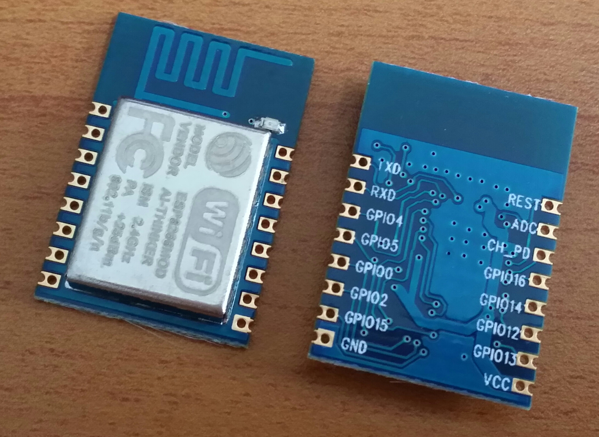

--

## CH340G
Convertitore USB-seriale

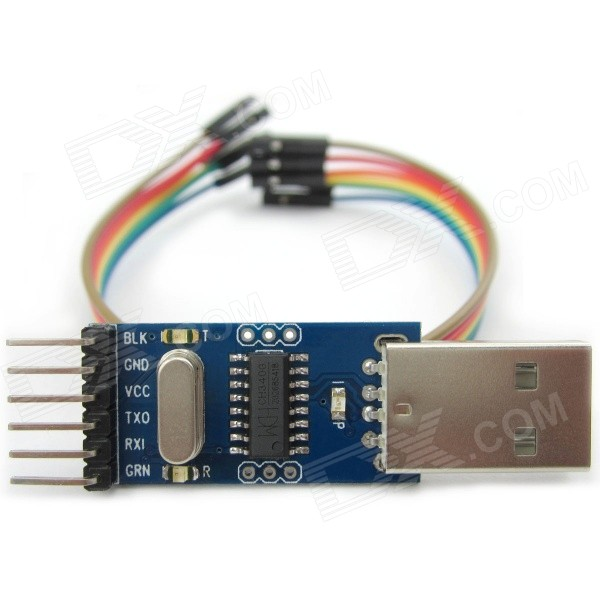

--

## GY-652 (BMP180 + HMC5883L)
Pressione atmosferica + campo magnetico

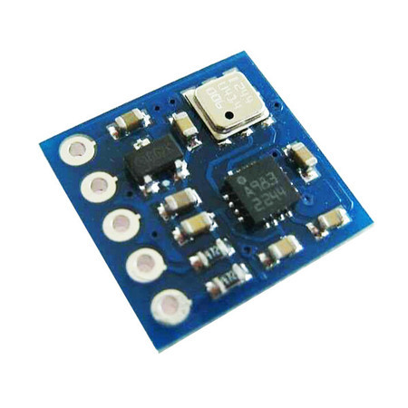

--

## DMARD03
Accelerazione

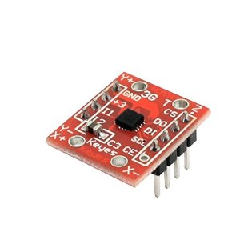

--

## DHT22
Umidità e temperatura

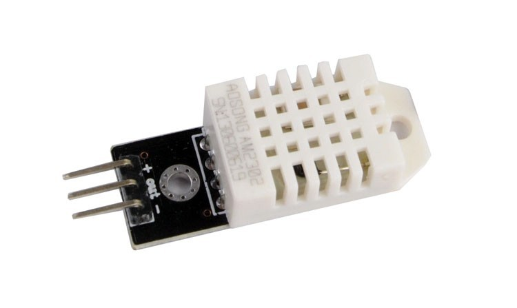

--

## DS18B20
Temperatura

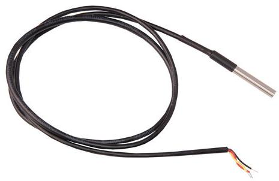

--

## Buzzer
Per generare suoni (fastidiosi)

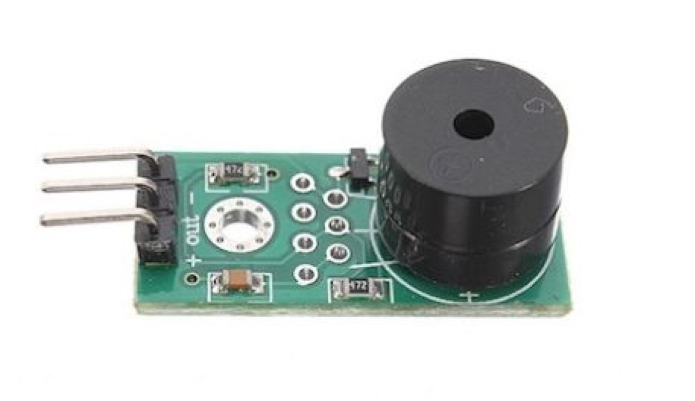

--

## Adattatore di livelli logici
Verrà spiegato meglio in seguito

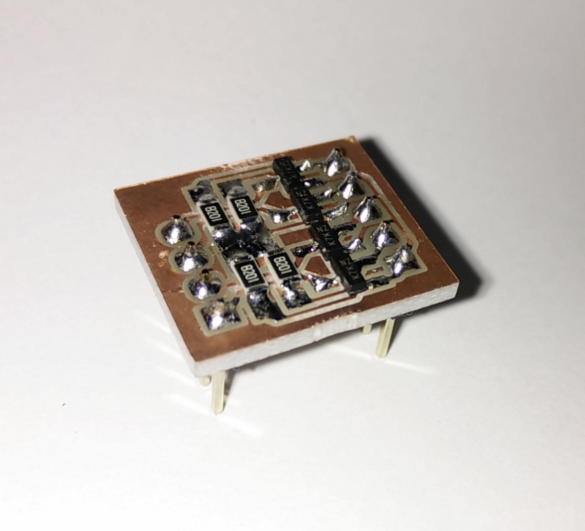

--

## LED

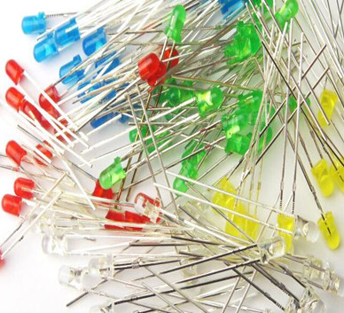

--

## Fotoresistenze
Per misurare l'intensità luminosa

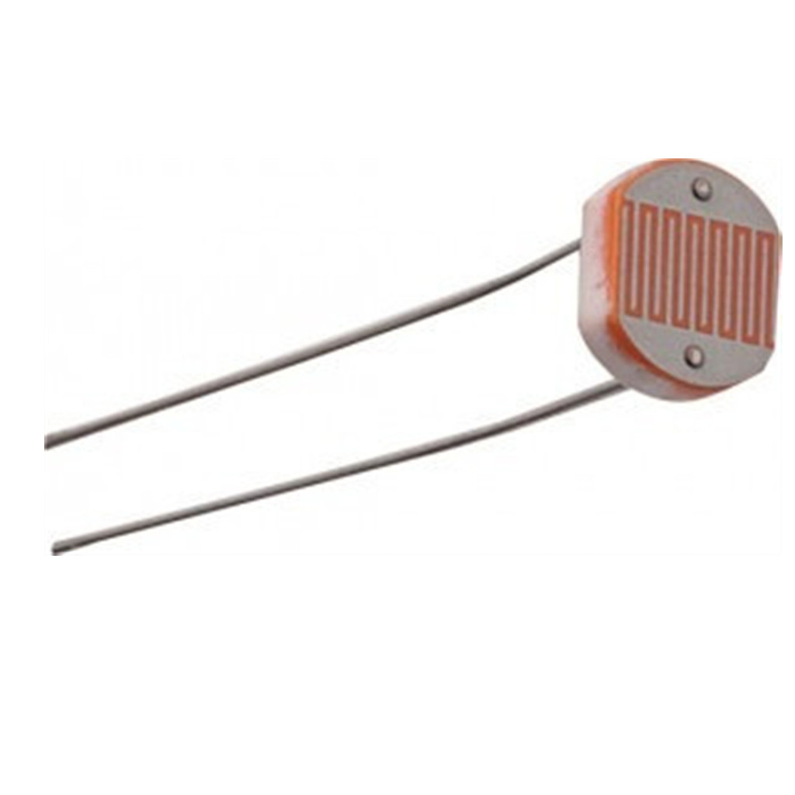

--

## Materiale elettronico misto
Resistenze, potenziometri, pulsanti, breadboard...

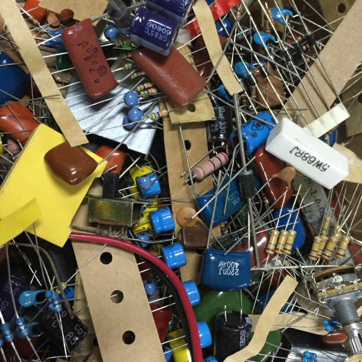

--

## E la board Arduino?

--

### Non c'è nessuna board Arduino!

<!-- .slide: data-background="img/evil-laugh.gif" -->

--

<!-- .slide: data-background="img/crying.jpg" -->

--

### Ok ok, forse non vi abbiamo mentito...

### Non utilizzerete l'hardware Arduino, ma programmerete comunque con Arduino

--

<!-- .slide: data-background="img/wat.jpg" -->

--

## Arduino Board Manager
A partire da Arduino 1.6.4 Arduino supporta l'installazione
di board aggiuntive direttamente dall'IDE Arduino.
Inoltre Arduino è stato reso compatibile con l'ESP8266.

--

<!-- .slide: data-background="img/wat2.jpg" -->

--

## Cosa devo fare???
 - Scaricate e installate Arduino 1.6.5 (non usare l'1.6.6!) <!-- .element: class="fragment" -->
 - Lanciatelo e andate in File → Impostazione → Additional Boards Manager URLs <!-- .element: class="fragment" -->
 - Aggiungete <!-- .element: class="fragment" --> nel campo a lato il seguente URL: [http://arduino.esp8266.com/stable/package_esp8266com_index.json](http://arduino.esp8266.com/stable/package_esp8266com_index.json)
 - Andate in Strumenti → Scheda → Boards Manager <!-- .element: class="fragment" -->
 - Selezionate <!-- .element: class="fragment" --> "**esp8266** by **ESP8266 Community**" e cliccate su Install
 - Ora Arduino funziona sul modulo ESP8266 <!-- .element: class="fragment" -->

--

<!-- .slide: data-background="img/doge_esp8266.jpg" -->

--

## Perchè non la board ufficiale Arduino + shield wifi?
 - Costo <!-- .element: class="fragment" -->
 - Dimensioni <!-- .element: class="fragment" -->
 - Costo <!-- .element: class="fragment" -->
 - Performance <!-- .element: class="fragment" -->

---

## Ora vediamo nel dettaglio ciascun componente

--

## È un po' noioso, ma cercate di prestare attenzione

--

<!-- .slide: data-background-video="img/homer.mp4,img/homer.webm" -->

---

## ESP8266 (ESP-12)
Il "core" del nostro sistema


--

## Features

 - 32-bit RISC CPU @ 80 MHz / 160 MHz <!-- .element: class="fragment" -->
 - 4 MB di memoria FLASH <!-- .element: class="fragment" -->
 - Wi-Fi IEEE 802.11 b/g/n integrato <!-- .element: class="fragment" -->
 - UART (Serial) <!-- .element: class="fragment" -->
 - 7 GPIO (digitalWrite, digitalRead) <!-- .element: class="fragment" -->
 - ADC 10 bit (analogRead) <!-- .element: class="fragment" -->
 - Software I2C e SPI <!-- .element: class="fragment" -->
 - FCC and CE approved <!-- .element: class="fragment" -->
 - 3.3 V <!-- .element: class="fragment" -->
 - Il tutto <!-- .element: class="fragment" --> a <b><u>3 €</u></b>!

--

<!-- .slide: data-background="img/wow.gif" -->

--

## Come si programma

L'ESP8266 si programma con la seriale.

Per collegarlo basta connettere
 - TX ↔ RX
 - RX ↔ TX
 - GPIO0 (ESP8266) ↔ DTR (convertitore)
 - REST (ESP8266) ↔ RTS (convertitore)

--

## Bug

Con Linux il convertitore USB-seriale ha un bug sulla linea RTS.

Una parziale soluzione è la seguente:
 - TX ↔ RX
 - RX ↔ TX
 - GPIO0 (ESP8266) ↔ GND
 - REST (ESP8266) ↔ NON CONNESSO
 
In questo modo all'accensione l'ESP entra automaticamente in modalità "programmazione" e, una volta programmato, lancia il programma.

Se volete invece che all'avvio l'ESP lanci in automatico il programma, connettete il pin GPIO0 a 3.3V.

--

# WARNING!

#### L'ESP8266 e tutti i sensori funzionano a 3.3 V, mentre il convertitore USB-seriale funziona a 5 V.

#### Fortunatamente nel modulo ESP-12 è integrato un convertitore 5 V → 3.3 V, quindi possiamo collegare direttamente il VCC del convertitore con il VCC dell'ESP.

### **Non collegate il VCC (5 V) del convertitore a nient'altro!!!**

<!-- .slide: data-background="#B00000" -->

--

# WARNING!

#### Anche le linee dati (RX, TX, DTR e RTS) della seriale sono a 5 V, e collegandole direttamente si rischierebbe di danneggiare l'ESP8266.

### **Utilizzate l'adattatore di livelli logici tra l'ESP8266 e la seriale!!!**

<!-- .slide: data-background="#B00000" -->

--

<!-- .slide: data-background="img/explosion.gif" -->

--

#### A questo punto l'ESP è connesso al PC, andiamo ora nell'IDE Arduino e, nella tab _Strumenti_ selezioniamo i seguenti parametri:
 - Scheda: "Generic ESP8266 Module"
 - Flash Mode: "QIO"
 - Flash Frequency: "80 MHz"
 - Upload Using: "Serial"
 - CPU Frequency "160 MHz"
 - Flash Size: "4M (1M SPIFFS)"
 - Reset Method: "ck"
 - Upload Speed: "115200"
 - Porta: dipende dal sistema operativo, generalmente "COM0" su Windows e "/dev/ttyUSB0" su Linux

Ora basta cliccare il pulsante "Carica" per compilare lo sketch e caricarlo sull'ESP.

---

## Adattatore di livelli logici

#### Nel kit che riceverete è incluso un adattatore di livelli logici bidirezionale che converte 4 linee a 5 V in altrettante 4 linee a 3.3 V.


--

#### Questo è il pinout

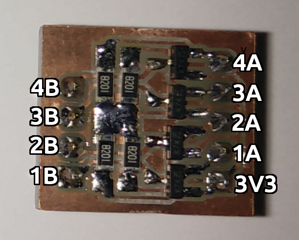

--

#### Per i più esperti, questo è lo schema:

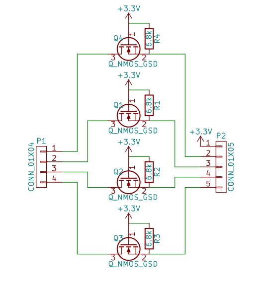

--

#### Potete collegare l'ESP8266 al convertitore USB-seriale in questo modo:
 - 3V3 a 3.3V (**NON all'uscita del convertitore USB-seriale**)
 - TX (ESP8266) ↔ 1A, 1B ↔ RX (convertitore)
 - RX (ESP8266) ↔ 2A, 2B ↔ TX (convertitore)
 - GPIO0 (ESP8266) ↔ 3A, 3B ↔ DTR (convertitore)
 - REST (ESP8266) ↔ 4A, 4B ↔ RTS (convertitore)

---

## BMP180 e HMC5883L
Pressione atmosferica + campo magnetico


--

#### Entrambi questi sensori sono connessi tramite I<sup>2</sup>C, per cui basta connettere
 - 3V3 a 3.3 V
 - GND a GND
 - SDA all'SDA dell'ESP8266 (pin 4)
 - SCL all'SCL dell'ESP8266 (pin 5)

--

#### Grazie alle librerie della Adafruit è molto semplice ottenere dati da questi sensori.
#### Andiamo quindi in Sketch → Include Library → Manage Libraries e installiamo le librerie
 - **Adafruit Unified Sensor** by **Adafruit**
 - **Adafruit BMP085 Unified** by **Adafruit**
 - **Adafruit HMC5883 Unified** by **Adafruit**

--

## BMP180 setup()

```
#include <Wire.h>
#include <Adafruit_Sensor.h>
#include <Adafruit_BMP085_U.h>
   
Adafruit_BMP085_Unified bmp = Adafruit_BMP085_Unified(10085);
float temperature;

void setup(void) 
{
	Serial.begin(115200);

	/* Initialise the sensor */
	if(!bmp.begin())
	{
		Serial.print("No BMP085 detected!");
		while(1);
	}
}
```

<!-- .slide: data-background="img/code.jpg" -->

--

## BMP180 loop()

```
void loop(void) 
{
	/* Get a new sensor event */ 
	sensors_event_t event;
	bmp.getEvent(&event);
 
	/* Display the results */
	if (event.pressure)
	{
		Serial.print("Pressure: ");
		Serial.print(event.pressure);
		Serial.println(" hPa");
		bmp.getTemperature(&temperature);
		Serial.print("Temperature: ");
		Serial.print(temperature);
		Serial.println(" C");
	}
	else
		Serial.println("Sensor error");

	delay(1000);
}
```

<!-- .slide: data-background="img/code.jpg" -->

--

## HMC5883L setup()

```
#include <Wire.h>
#include <Adafruit_Sensor.h>
#include <Adafruit_HMC5883_U.h>

Adafruit_HMC5883_Unified mag = Adafruit_HMC5883_Unified(12345);

void setup(void) 
{
	Serial.begin(115200);
  
	/* Initialise the sensor */
	if(!mag.begin())
	{
		Serial.println("No HMC5883 detected!");
		while(1);
	}
}
```

<!-- .slide: data-background="img/code.jpg" -->

--

## HMC5883L loop()

```
void loop(void)
{
	/* Get a new sensor event */ 
	sensors_event_t event; 
	mag.getEvent(&event);
 
	/* Display the results (values are in micro-Tesla (uT)) */
	Serial.print("X: ");
	Serial.print(event.magnetic.x);
	Serial.print(" # Y: ");
	Serial.print(event.magnetic.y);
	Serial.print(" # Z: ");
	Serial.println(event.magnetic.z);

	// Hold the module so that Z is pointing 'up' and you can measure the heading with x and y
	float heading = atan2(event.magnetic.y, event.magnetic.x);

	Serial.print("Heading (degrees): ");
	Serial.println(heading * 180 / M_PI);

	delay(1000);
}
```

<!-- .slide: data-background="img/code.jpg" -->

--

#### Potete anche migliorare la precisione della vostra bussola elettronica applicando la correzione relativa alla [declinazione magnetica](https://en.wikipedia.org/wiki/Magnetic_declination).

#### A Milano la declinazione magnetica nel 2015 è **2.25° E**.

--

<!-- .slide: data-background-video="img/sparrow.mp4,img/sparrow.webm" -->

---

## DHT22
Umidità e temperatura


--

#### Collegate:
 - `+` a 3.3 V
 - `-` a GND
 - out a un qualunque pin dell'ESP8266 (nel codice d'esempio, GPIO13)

--

#### Anche con il DHT22 è presente una libreria Adafruit; andiamo di nuovo in Sketch → Include Library → Manage Libraries e installiamo la libreria
 - **Adafruit DHT Unified** by **Adafruit**

--

## setup()

```
#include <Adafruit_Sensor.h>
#include <DHT.h>
#include <DHT_U.h>

DHT_Unified dht(13, DHT22);

void setup() {
	Serial.begin(115200); 
	dht.begin();
}
```

<!-- .slide: data-background="img/code.jpg" -->

--

## loop()

```
void loop() {
	sensors_event_t event;

	dht.temperature().getEvent(&event);
	if (!isnan(event.temperature)) {
		Serial.print("Temperature: ");
		Serial.print(event.temperature);
		Serial.println(" C");
	}
	else
		Serial.println("Error reading temperature!");

	dht.humidity().getEvent(&event);
	if (!isnan(event.relative_humidity)) {
		Serial.print("Humidity: ");
		Serial.print(event.relative_humidity);
		Serial.println("%");
	}
	else
		Serial.println("Error reading humidity!");
	
	delay(2000);
}
```

<!-- .slide: data-background="img/code.jpg" -->

---

## DS18B20
Temperatura


--

#### Il DS18B20 utilizza la stessa interfaccia del DHT22 (OneWire), e si collega all'ESP8266 allo stesso modo:
 - Cavo rosso a 3.3 V
 - Cavo nero a GND
 - Cavo giallo ad un pin qualunque (nel codice d'esempio, GPIO2)

--

#### Scarichiamo poi (come al solito da Sketch → Include Library → Manage Libraries) la seguente libreria:
 - **DallasTemperature** by **Miles Burton, Tim Newsome, Guil Barros, Rob Tillaart**

--

## setup()

```
#include <OneWire.h>
#include <DallasTemperature.h>

OneWire oneWire(2);
DallasTemperature sensors(&oneWire);

void setup(void)
{
	Serial.begin(115200);
	sensors.begin();
}
```

<!-- .slide: data-background="img/code.jpg" -->

--

## loop()

```
void loop(void)
{
	Serial.print("Requesting temperatures... ");
	sensors.requestTemperatures();
	Serial.println("DONE");

	Serial.print("Temperature is: ");
	Serial.print(sensors.getTempCByIndex(0));
	Serial.println(" C");

	delay(500);
}
```

<!-- .slide: data-background="img/code.jpg" -->

---

## DMARD03
Accelerazione


--

#### Anche sul DMARD03 è disponibile l'interfaccia I<sup>2</sup>C, per cui connettete:
 - +3 a 3.3 V
 - GND a GND
 - DI all'SDA dell'ESP8266 (pin 4)
 - SCL all'SCL dell'ESP8266 (pin 5)
 - CS a GND

--

Purtroppo per il DMARD03 non è disponibile alcuna libreria Arduino di qualità accettabile.

Fortunatamente è abbastanza semplice leggere i dati dal DMARD03, quindi potete ottenere i valori di accelerazione direttamente tramite la libreria Wire.

A tal proposito [qui](http://mccoycomponents.com/download-PDF/DMARD03%20Datasheet%20V2.3.pdf) è disponibile il datasheet del modulo.

Collegando i pin come descritto nella slide precedente, il DMARD03 assumerà l'indirizzo 7-bit **0x1D**.

---

## Buzzer
Per generare suoni (fastidiosi)


--

#### Il buzzer va collegato in questo modo:
 - `+` a 3.3 V
 - `-` a GND
 - out a un qualunque pin dell'ESP8266 (nel codice d'esempio, GPIO16)

--

## Codice

```
#include <Ticker.h>

#define BUZZER_PIN 16

Ticker buzzer;

void toggleBuzzer()
{
	digitalWrite(BUZZER_PIN, !digitalRead(BUZZER_PIN));
}

void setup()
{
	pinMode(BUZZER_PIN, OUTPUT);
  
	buzzer.attach_ms(5, toggleBuzzer);
}

void loop()
{

}
```

<!-- .slide: data-background="img/code.jpg" -->

--

# WARNING!

### La libreria *Tone* **non** funziona con ESP8266, se volete generare toni fatelo a mano con la libreria *Ticker*.

<!-- .slide: data-background="#B00000" -->

---

## LED, fotoresistenze, potenziometri, bottoni...

--

# [Google!](http://lmgtfy.com/?q=arduino+potenziometro)

--

#### Inoltre potete trovare altre informazioni relative all'ESP8266 [sulla pagina GitHub di Arduino ESP8266](https://github.com/esp8266/Arduino), [sulla documentazione ufficiale ESP8266](https://esp8266.github.io/Arduino/versions/2.0.0/), [sulla documentazione ufficiale Arduino](https://www.arduino.cc) o [tra le slide del vecchio corso Arduino](https://www.poul.org/2015/04/corso-arduino-2015/).

--

# WARNING!

### Per leggere una tensione analogica sul pin "ADC" basta usare *analogRead(A0)* (come in Arduino).

### L'ingresso analogico accetta però valori tra 0 V e 1 V; fate quindi in modo di non superare 1 V.

<!-- .slide: data-background="#B00000" -->

---

## Connettersi ad una rete Wi-Fi

--

L'ESP8266 supporta:
 - Open network
 - WEP
 - WPA/WPA2 Personal

Non supporta il WPA/WPA2 Enterprise, quindi non può connettersi a **polimi-protected** o **eduroam**.

--

## setup()

```
#include <ESP8266WiFi.h>

const char* ssid = "********"; // Set the ssid (name of the Wi-Fi network) here
const char* password = "********"; // Set the Wi-Fi password here

void setup(void)
{
	Serial.begin(115200);

	// Connect to an existing Wi-Fi network
	WiFi.begin(ssid, password);
	Serial.print("Connecting");

	// Wait for connection
	while (WiFi.status() != WL_CONNECTED) {
		delay(500);
		Serial.print(".");
	}
	
	Serial.println(" DONE!");
}
```

<!-- .slide: data-background="img/code.jpg" -->

--

## loop()

```
void loop(void)
{
	Serial.println("");
	Serial.print("Connected to ");
	Serial.println(ssid);
	Serial.print("IP address: ");
	Serial.println(WiFi.localIP());
	delay(2000);
}
```

<!-- .slide: data-background="img/code.jpg" -->

---

## HTTP GET

--

Una volta connessi ad una rete Wi-Fi possiamo effettuare richieste HTTP GET.

Il _setup()_ è pressochè identico al precedente sketch, è stata solamente aggiunta la riga

```#include <ESP8266HTTPClient.h>```

--

## setup()

```
#include <ESP8266WiFi.h>
#include <ESP8266HTTPClient.h>

const char* ssid = "********"; // Set the ssid (name of the Wi-Fi network) here
const char* password = "********"; // Set the Wi-Fi password here

void setup(void)
{
	Serial.begin(115200);

	// Connect to an existing Wi-Fi network
	WiFi.begin(ssid, password);
	Serial.print("Connecting");

	// Wait for connection
	while (WiFi.status() != WL_CONNECTED) {
		delay(500);
		Serial.print(".");
	}
	
	Serial.println(" DONE!");
}
```

<!-- .slide: data-background="img/code.jpg" -->

--

## loop() - HTTP

```
void loop() {
	HTTPClient http;
	int httpCode;
	const char *url = "api.github.com";
	const char *path = "/";

	/* HTTP */
	http.begin(url, 80, path);
	httpCode = http.GET();
	
	if (httpCode > 0) {
		// HTTP header has been send and server response header has been handled
		Serial.printf("[HTTP] GET... code: %d\n", httpCode); 
		
		if (httpCode == 200)
			Serial.println(http.getString());
	}
	else
		Serial.printf("[HTTP] GET... failed: error code %d", httpCode);

	delay(2000);
}
```

<!-- .slide: data-background="img/code.jpg" -->

--

## loop() - HTTPS

```
void loop() {
	HTTPClient http;
	int httpCode;
	const char *url = "api.github.com";
	const char *path = "/";

	/* HTTPS */
	http.begin(url, 443, path, true, "CF 05 98 89 CA FF 8E D8 5E 5C E0 C2 E4 F7 E6 C3 C7 50 DD 5C");
	httpCode = http.GET();
	
	if (httpCode > 0) {
		// HTTP header has been send and server response header has been handled
		Serial.printf("[HTTP] GET... code: %d\n", httpCode); 
		
		if (httpCode == 200)
			Serial.println(http.getString());
	}
	else
		Serial.printf("[HTTP] GET... failed: error code %d", httpCode);

	delay(2000);
}
```

<!-- .slide: data-background="img/code.jpg" -->

--

#### Come potete vedere fare una richiesta GET HTTPS è molto semplice.

#### Il quinto parametro di http.begin è lo SHA-1 fingerprint del server e potete ottenerlo da un qualunque browser.
#### Nel nostro esempio è "CF 05 98 89 CA FF 8E D8 5E 5C E0 C2 E4 F7 E6 C3 C7 50 DD 5C", lo SHA-1 fingerprint di api.github.com

#### Se possibile usate sempre HTTPS al posto di HTTP.

---

## HTTP POST

--

Il codice per effettuare una richiesta HTTP POST è praticamente identico a quello per una GET, basta sostituire

```httpCode = http.GET();```

con

```	httpCode = http.POST("post_message_here");```

--

## setup()

```
#include <ESP8266WiFi.h>
#include <ESP8266HTTPClient.h>

const char* ssid = "********"; // Set the ssid (name of the Wi-Fi network) here
const char* password = "********"; // Set the Wi-Fi password here

void setup(void)
{
	Serial.begin(115200);

	// Connect to an existing Wi-Fi network
	WiFi.begin(ssid, password);
	Serial.print("Connecting");

	// Wait for connection
	while (WiFi.status() != WL_CONNECTED) {
		delay(500);
		Serial.print(".");
	}
	
	Serial.println(" DONE!");
}
```

<!-- .slide: data-background="img/code.jpg" -->

--

## loop() - HTTP

```
void loop() {
	HTTPClient http;
	int httpCode;
	const char *url = "api.github.com";
	const char *path = "/";

	/* HTTP */
	http.begin(url, 80, path);
	httpCode = http.POST("POuL=cool");
	
	if (httpCode > 0) {
		// HTTP header has been send and server response header has been handled
		Serial.printf("[HTTP] POST... code: %d\n", httpCode); 
		
		if (httpCode == 200)
			Serial.println(http.getString());
	}
	else
		Serial.printf("[HTTP] POST... failed: error code %d", httpCode);

	delay(2000);
}
```

<!-- .slide: data-background="img/code.jpg" -->

--

## loop() - HTTPS

```
void loop() {
	HTTPClient http;
	int httpCode;
	const char *url = "api.github.com";
	const char *path = "/";

	/* HTTPS */
	http.begin(url, 443, path, true, "CF 05 98 89 CA FF 8E D8 5E 5C E0 C2 E4 F7 E6 C3 C7 50 DD 5C");
	httpCode = http.POST("POuL=cool");
	
	if (httpCode > 0) {
		// HTTP header has been send and server response header has been handled
		Serial.printf("[HTTP] POST... code: %d\n", httpCode); 
		
		if (httpCode == 200)
			Serial.println(http.getString());
	}
	else
		Serial.printf("[HTTP] POST... failed: error code %d", httpCode);

	delay(2000);
}
```

<!-- .slide: data-background="img/code.jpg" -->

--

Sia la funzione _http.GET()_ che la funzione _http.POST(payload)_ ritornano un codice
- se è positivo questo rappresenta l'HTTP code ricevuto dal server
- se è negativo identifica un errore del client, con i seguenti significati:
   - -1: connection refused
   - -2: send header failed
   - -3: send payload failed
   - -4: not connected
   - -5: connection lost
   - -6: no stream
   - -7: no http server

---

# Domande?

---


<!-- .slide: data-background="#ffffff" -->

---

# Interfaccia

---

## Json

Standard di trasmissione dati

```json
{
	"firstName": "John",
	"lastName": "Smith",
	"isAlive": true,
	"age": 25,
	"phoneNumbers": [
	{
		"type": "home",
		"number": "212 555-1234"
	},
	{
		"type": "office",
		"number": "646 555-4567"
	}
	],
	"children": []
}
```

--

### Codice Python

#### dump
```python
>>> import json
>>> json.dumps(['foo', {'bar': ('baz', None, 1.0, 2)}])
'["foo", {"bar": ["baz", null, 1.0, 2]}]'
```

#### load
```python
>>> import json
>>> json.loads('["foo", {"bar":["baz", null, 1.0, 2]}]')
[u'foo', {u'bar': [u'baz', None, 1.0, 2]}]'[1,2,3,{"4":5,"6":7}]'
```

--

### Ma su Arduino?

--

### per scrivere bastano le operazioni sulle stringhe

```c++
stringa_json = "{`"temperatura\": " + String(temp) + "}";
```

--

### per leggere vi conviene usare una libreria

https://github.com/bblanchon/ArduinoJson

---

## API

--

### Application Programming Interface

Un'interfaccia per programmatori

--

## b3api

Interfaccia minimale per gestire lo stato della nostra sede

https://github.com/Politecnico-Open-unix-Labs/b3api

--

### Funzionalità

- Il server conserva i dati
- Tutti possono leggere
- I client autorizzati possono scrivere


---

## Inviare dati

--

### POST

```c++
http.POST("{\"temperatura\":\"24\", \"key\":<YOUR_TOKEN_HERE>}");
```

---

## Ricevere dati

--

### GET

```c++
stringa_json = http.GET();
```

---

### WebSocket

--

#### in python

```python
from websocket import create_connection

ws = create_connection("ws://localhost:8080")

# receiving
print(ws.recv())

# sending
ws.send('{"hello":"world", "key":<YOUR_TOKEN_HERE>}')

ws.close()
```

#### ma potete usare il vostro linguaggio preferito

---

## Visualizzazione

--

### freeboard.io

https://freeboard.io

--

### Interfaccia molto intuitiva

--

### Effettua le GET
### e visualizza i dati

---

# Demo!

---

# Domande?

---


# Thank you!
## See you tomorrow!


These slides are licensed under Creative Commons<br>
Attribution-ShareAlike 3.0 Unported

## [POUL.ORG](https://www.poul.org)


          </script>
        </section>
      </div>

    </div>

    <script src="reveal.js/lib/js/head.min.js"></script>
    <script src="reveal.js/js/reveal.js"></script>

    <script>

    // Full list of configuration options available at:
    // https://github.com/hakimel/reveal.js#configuration
    Reveal.initialize({
      controls: true,
      progress: true,
      history: true,
      center: true,

      transition: 'slide', // none/fade/slide/convex/concave/zoom

      // Optional reveal.js plugins
      dependencies: [
        { src: 'reveal.js/lib/js/classList.js', condition: function() { return !document.body.classList; } },
        { src: 'reveal.js/plugin/markdown/marked.js', condition: function() { return !!document.querySelector( '[data-markdown]' ); } },
        { src: 'reveal.js/plugin/markdown/markdown.js', condition: function() { return !!document.querySelector( '[data-markdown]' ); } },
        { src: 'reveal.js/plugin/highlight/highlight.js', async: true, callback: function() { hljs.initHighlightingOnLoad(); } },
        { src: 'reveal.js/plugin/zoom-js/zoom.js', async: true },
        { src: 'reveal.js/plugin/notes/notes.js', async: true }
      ]
    });

  </script>

  </body>
</html>
